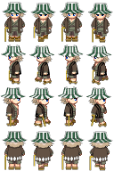
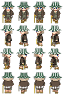

设置图片失效文字 alt:
设置图片显示文字 title:
设置图片宽度 width /高度 height :
段落标签p,可以把 HTML 文档分割为若干段落
水平线标签hr
文字加粗 strong / b
文字斜体 em / i
文字删除线 del / s
文字下划线 ins / u
插入图片 img:

设置图片失效文字 alt:
设置图片显示文字 title:
设置图片宽度 width /高度 height :
超链接 a 地址href 打开方式 target
html+css教程
锚点链接 id href="#id"
三级标题
| 特殊字符 | 描述 | 字符代码 |
|---|---|---|
| 空格符 | & nbsp ; | |
| < | 小于号 | & lt ; |
| > | 大于号 | & gt ; |
| & | 和号 | & amp ; |
| ¥ | 人民币 | & yen ; |
| © | 版权 | & copy ; |
| ® | 注册商标 | & reg ; |
| ° | 摄氏度 | & deg ; |
| ± | 正负号 | & plusmn ; |
| × | 乘号 | & times ; |
| ÷ | 除号 | & divide ; |
| ² | 平方 | & sup2 ; |
| ³ | 立方 | & sup3 ; |
| 表格table 表头thead 表尾tbody 行tr 元素 td | ||
样式 style
标签选择器 xxx {}
类定义 class=“xxx”
类选择器 .xxx{}
id定义 id="xxx"
id选择器（只能调用一次） #xxx{}
通配符选择器（可操作页面中所有元素） *{}
字体 font-family:
字体大小 font-size:
字体粗细 font-weight:
字体样式 font-style:
font: font-style font-weight font-size/line-height font-family;
文本对齐 text-align:
文本装饰 text-decoration:
文本缩进 text-indent:
行间距(行高) line-height:
垂直居中技巧:行高=盒子高度
复合选择器:
后代选择器 father 后代{}（可选择任意后代）
子元素选择器 father>son{}（只选择子代）
并集选择器a,
b{}(同时选择)
链接伪类选择器:
未访问链接样式 a: link{}
已访问链接样式 a: visited{}
鼠标经过链接样式 a:hover{}
按住时链接样式 a: active{}
测试链接
焦点伪类选择器 xxx(input):focus{}
测试表单:
->行内元素 display:block;
->块元素 display:inline;
->行内元素 display:inline-block;
背景设置:
背景颜色: background-color: transparent(透明)/颜色;
背景图片: background-image: none(无)/url(url);
背景平铺: background-repeat: repeat/no-repeat/repeat-x/repeat-y;
背景位置: background-position: x y;(可使用精确值或方位名词)
背景固定（附着）: background-attachment: scroll(随内容滚动)/fixed(固定);
background: 背景颜色 背景图片地址 背景平铺 背景图像滚动 背景图片位置;
背景半透明: background: rgba(r,g,b,alpha);alpha 透明度（0~1）
css选择器优先级:
| 选择器 | 选择器权重 |
|---|---|
| 继承 或者 * | 0,0,0,0 |
| 元素选择器 | 0,0,0,1 |
| 类选择器，伪类选择器，属性选择器 | 0,0,1,0 |
| id选择器 | 0,1,0,0 |
| 行内样式 style="" | 1,0,0,0 |
| !important | 无穷大 |
盒子边框 border:
border: border-width(定义边框粗细，px) || border-style(边框样式) || border-color(边框颜色)
上边框 border-top
下边框 border-bottom
左边框 border-left
右边框 border-right
表格边框合并 border-collapse:collapse;
盒子内边距 padding:
上内边距 padding-top
下内边距 padding-bottom
左内边距 padding-left
右内边距 padding-right
padding: a; (上下左右内边距都是a)
padding: a b; (上下内边距是a，左右内边距是b)
padding: a b c; (上内边距是a，左右内边距是b，下内边距是c)
padding: a b c d; (上内边距是a，右内边距是b，下内边距是c，左内边距是d)
盒子外边距 margin:
上外边距 margin-top
下外边距 margin-bottom
左外边距 margin-left
右外边距 margin-right
margin复合简写规则与padding相同
相邻盒子上下外边距会合并（去较大值）
块级盒子水平居中 1、指定宽度 2、左右外边框设为auto
清除浏览器自带内外边距
*{
padding:0;
margin:0;
}
圆角边框 border-radius: length(半径);
border-radius:左上 右上 右下 左下;
单独设置 border-top/bottom-left/right-radius:
盒子阴影 box-shadow:h-shadow(水平阴影位置) v-shadow(垂直阴影位置) blur(模糊距离) spread(阴影尺寸) color(阴影颜色) inset(将外部阴影(outset)改为内部阴影);
文字阴影 text-shadow: h-shadow(水平阴影位置) v-shadow(垂直阴影位置) blur(模糊距离) color(阴影颜色);
浮动:
选择器{
float: 属性值(不浮动 none/向左浮动 left/向右浮动 right);
}
清除浮动:
1.选择器{
clear: 属性值(清除两边浮动 both/清除向左浮动 left/清除向右浮动 right);
}
2.父元素overflow: hidden;
3.父元素.clearfix:after{
content:"";
display:block;
height:0;
clear:both;
visibility:hidden;
}
4.父元素.clearfix:before,.clearfix:after{
content:"";
display:table;
}
.clearfix:after{
clear:both;
}
注:为兼容IE6、7:
.clearfix{
*zoom:1;
}
浮动只会压住盒子，不会压住图片和文字
定位:
定位模式 position: static(静态定位)/ relative(相对定位)/ absolute(绝对定位)/ fixed(固定定位)/ sticky(粘性定位);
边偏移 top/bottom/left/right: apx;(元素相对于父元素上/下/左/右边线距离为a)
相对定位 根据原来位置移动(继续保留原来位置)
绝对定位 根据父元素定位(无父元素或父元素无定位则根据浏览器定位 不保留原来位置会导致脱标)
子绝父相
固定定位 固定在可视窗口中的固定位置(不保留原来位置)
相对于固定与版心右边: left=50%; margin-left=50%版心;
粘性定位(IE不兼容) 以可视窗口为参照移动 占有原来位置 必须添加 至少一个边偏移
z-index: ;设置盒子叠放次序(越大越靠上)
绝对定位和固定定位会压住所有内容
显示与隐藏
display: none(隐藏（位置不保留）)/ block(显示（设为块级元素）);
visibility: hidden(隐藏（位置保留）)/visible(显示);
overflow(溢出隐藏): visible(溢出时不剪切也不添加滚动条)/ auto(溢出时剪切并添加滚动条)/ hidden(不显示溢出部分)/ scroll(总是显示滚动条);
鼠标样式
cursor: default(默认)/ pointer(小手)/ move(移动)/ text(文本)/ not-allowed(禁止);
表单轮廓线取消 outline: none/ 0;
文本域禁止拖拽 resize: none;
行内元素或行内块元素垂直对齐
vertical-align: baseline(元素放置在父元素的基线上)/ top(元素顶端与行中最高元素的顶端对齐)/ middle(把元素放置在父元素的中部)/ bottom(把元素顶端与行中最低的元素的顶端对齐);
单行文本溢出显示省略号
white-space: nowrap(默认为normal);
overflow: hidden;
text-overflow: ellipsis;
多行文本溢出显示省略号(有兼容性问题webkit)
overflow: hidden;
text-overflow: ellipsis;
display: -webkit-box;
-webkit-line-clamp:2(显示行数);
-webkit-box-orient: vertical;
京东css初始化
/*所有标签内外边距清零*/
*{
margin:0;
padding:0
}
/*斜体文字不倾斜*/
em,
i{
font-style:normal
}
/*去掉圆点*/
li{
list-style:none
}
/*去掉低版本浏览器边框，防止图片底部缝隙*/
img{
border:0;
vertical-align:middle
}
/*按钮鼠标样式*/
button{
cursor:pointer
}
/*链接黑色，取消下划线*/
a{
color:#666;
text-decoration:none
}
/*经过时链接颜色（京东红）*/
a:hover{
color:#c81623
}
button,
input{
font-family:Microsoft YaHei,Heiti SC,tahoma,arial,Hiragino Sans GB,"\5B8B\4F53",sans-serif
}
body{
/*抗锯齿性（css3）*/
-webkit-font-smoothing:antialiased;
/*默认字体与背景*/
background-color:#fff;
font:12px/1.5 Microsoft YaHei,Heiti SC,tahoma,arial,Hiragino Sans GB,"\5B8B\4F53",sans-serif;
color:#666
}
/*隐藏*/
.hide,
.none{
display:none
}
/*清除浮动*/
.clearfix:after{
visibility:hidden;
clear:both;
display:block;
content:".";
height:0
}
.clearfix{
*zoom:1
}
< header>:头部标签
< nav>:导航标签
< article>:内容标签
< section>:定义文档某区域
< aside>:侧边栏标签
< footer>:尾部标签
< audio>:音频
< video>:视频
input表单新增type
email(限制输入Email类型)
url(限制输入url类型)
date(限制输入日期类型)
time(限制输入时间类型)
month(限制输入月类型)
week(限制输入周类型)
number(限制输入数字类型)
tel(手机号码)
search(搜索框)
color(生成颜色选择表单)
新增表单属性
required="required"(内容不能为空)
placeholder=""(提示文本)
autofocus="autofocus"(自动聚焦)
autocomplete="off/on"(显示之间键入的值)
multiple="multiple"(可以多选文件提交)
属性选择器(权重0，0，1，0)
E[att]{}(选择具有att属性的E元素)
E[att="val"]{}(选择具有att属性且属性等于val的E元素)
E[att^="val"]{}(匹配具有att属性且值以val开头的E元素)
E[att$="val"]{}(匹配具有att属性且值以val结尾的E元素)
E[att*="val"]{}(匹配具有att属性且职中含有val的E元素)
结构伪类选择器
E:first-child{}(匹配父元素中第一个子元素E)
E:last-child{}(匹配父元素中最后一个子元素E)
E:nth-child(n){}(匹配父元素中第n个子元素E)(可以填数字，关键字（even偶数，odd奇数）或公式)
E:first-of-type{}(指定类型E的第一个)
E:last-of-type{}(指定类型E的最后一个)
E:nth-of-type(n){}(指定类型E的第n个)
伪元素选择器(权重为0，0，0，1)
::before{}(在元素内部的前面插入内容)
::after{}(在元素内部的后面插入内容)
盒子模型
box-sizing:content-box;(盒子大小为width+padding+border)
box-sizing:border-box;(盒子大小为width)
滤镜filter:函数();
filter:blur();(模糊化处理)
calc()(让css声明时进行计算)
过渡
transition: 过渡属性 花费时间 运动曲线 何时开始;
属性:想要变化的css属性
花费时间:单位是s
运动曲线:默认为ease(逐渐慢下来),linear(匀速),ease-in(加速),ease-out(减速),ease-in-out(先加速后减速)
何时开始:单位是s，可以设置延迟触发时间
转换
移动: transform: translate(x,y);/transform: translateX(n); transform: translateY(n);(不会影响其他元素的位置)
旋转: transform: rotate(度数);(单位:deg 正顺负逆 旋转中心默认为中心点)
旋转中心点: transform-origin: x y;(可以设置像素或方位名词)
缩放: transform: scale(x,y)(倍数);
动画
定义动画:
@keyframes 动画名称{
/*开始状态*/
0%{
}
/*结束状态*/
100%{
}
}
使用动画:
animation-name:动画名称;
animation-duration:持续时间;
动画属性:
@keyframes (规定动画)
animation (除了-play-state的所有动画属性缩写)
animation-name (规定动画名称)
animation-duration (规定动画完成一个周期的时间)
animation-timing-function (规定动画的速度曲线)
animation-delay (规定动画何时开始)
animation-iteration-count (规定动画被播放的次数，infinite)
animation-direction (规定动画是否在下一个周期逆向播放，alternate逆播放)
animation-play-state (规定动画是否正在运行或暂停，running/pause)
animation-fill-mode (规定动画结束后状态，forwards保持/backwards回到起始)
3D转换
3D位移 transform:translate3d(x,y,z);/transform:translateX();transform:translateY();transform:translateZ();
3D旋转 transform:rotate3d(x,y,z);/transform:rotateX();transform:rotateY();transform:rotateZ();
透视 perspective:x;(写到被观察元素的父盒子上)
3D呈现 transform-style:flat(子元素不开启立体空间)/preserve-3d(开启立体空间);(写给父级)
alert(msg);(弹出警示框)
console.log(msg);(控制台打印输出信息)
prompt(info);(弹出输入框，用户可以输入)
var x;(声明变量)
数据类型
Number 数字型
Boolean 布尔型
String 字符串
Undefined 未定义
Null 空
Infinity 无穷大
-Infinity 无穷小
NaN 非数值
转换成字符串
toString();
String();(强制转换)
加号拼接
转换成数字型
parseInt();(转换成整数型)
parseFloat();(转换成浮点型)
Number(强制转换);
算数运算式隐式转换
Boolean();(转换成布尔型)('',0,NaN,null,undefined->false,其他为true)
声明函数:function(){}
arguments 所有传入实参的伪数组
document.getElementById();通过id获取对象
document.getElementsByTagName();通过标签名获取对象(伪数组)
document.getElementsByClassName();通过类名获取对象(伪数组)
document.querySelector();获取选择器中第一个元素对象
document.querySelectorAll();获取选择器中所有元素对象(伪数组)
document.body;获取body
document.documentElement;获取html标签
鼠标事件
onclick(鼠标点击左键触发)
onmouseover(鼠标经过触发)
onmouseout(鼠标离开触发)
onfocus(获得鼠标焦点触发)
onblur(失去鼠标焦点触发)
onmousemove(鼠标移动触发)
onmouseup(鼠标弹起触发)
onmousedown(鼠标按下触发)
element.innerText(从起始到终止的内容，去除html标签，去掉空格和换行)
element.innerHTML(从起始到终止的内容，包括html标签，保留空格和换行)
element.getAttribute(属性)(获取自定义属性)
element.setAttribute(属性,值)(设置自定义属性)
element.removeAttribute(属性)(移除自定义属性)
element.parentNode(父节点)
element.childNodes(所有子节点)
element.children(所有子元素节点)
element.firstChild(第一个子节点)
element.lastChild(最后一个子节点)
element.firstElementChild(第一个子元素节点)
element.lastElementChild(最后一个子元素节点)
element.previousSibling(上一个兄弟节点/null)
element.nextSibling(下一个兄弟节点/null)
element.previousElementSibling(上一个兄弟元素节点/null)
element.nextElementSibling(下一个兄弟元素节点/null)
document.createElement();(创建元素节点)
element.appendChild();(添加新子节点)
element.insertBefore(child,指定元素);(在指定元素前插入新节点)
element.removeChild();(移除子节点)
element.cloneNode(true/false);(复制节点true:深拷贝，复制。false:浅拷贝，无内容)
注册/添加事件
eventTarget.addEventListener(type,listener[, useCapture:true处于捕获阶段/false处于冒泡阶段]);
type:事件类型字符串（click）
listener:事件处理函数
useCapture:可选 布尔值
eventTarget.attachEvent(eventNameWithOn, callback);
eventNameWithOn:事件类型字符串（onclick）
callback:事件处理函数
删除事件
eventTarget.removeEventListener(type,listener[, useCapture:true处于捕获阶段/false处于冒泡阶段]);
eventTarget.detachEvent(eventNameWithOn, callback);
事件对象
e.target (返回触发事件的对象 标准)
e.srcElement (返回触发事件的对象 非标准)
e.type (返回事件类型（click）)
e.cancelBubble (阻止冒泡 非标准)
e.returnValue (阻止默认事件 非标准)
e.preventDefault() (阻止默认事件 标准)
e.stopPropagation() (阻止冒泡 标准)
window.setTimeout(调用函数[,延迟的毫秒数]);(设置定时器)
window.clearTimeout(timeout ID);(停止计时器)
window.setInterval(调用函数[,延迟的毫秒数]);(设置定时器 重复调用)
window.clearInterval(interval ID);(停止计时器)
URL
protocol://host[:port]/path/[?query]#fragment
protocol (通信协议)
host (主机（域名）)
port (端口号)
path (路径)
query (参数，键值对，&分隔)
fragment (片段，链接 锚点)
location.href (获取或设置 URL)
location.host (返回主机（域名）)
location.port (返回端口号)
location.pathname (返回路径)
location.search (返回参数)
location.hash (返回片段)
location.assign(跳转页面（重定向页面）) ()
location.replace(替换当前页面，无法后退) ()
location.reload(重新加载页面) ()
navigation对象 浏览器版本
history.back() (后退)
history.forward() (前进)
history.go() (前进后退 正数前进，复数后退)
element.offsetParent (该元素带有定位的父级元素)
element.offsetTop (元素相对带有定位父元素上方的偏移量)
element.offsetLeft (元素相对带有定位父元素左边框的偏移量)
element.offsetWidth (自身包括内边距，边框，内容的宽度（不含单位）)
element.offsetHeight (自身包括内边距，边框，内容的高度（不含单位）)
element.clientTop (元素上边框大小)
element.clientLeft (元素左边框大小)
element.clientWidth (自身包括内边距，内容的宽度（不含边框，不含单位）)
element.clientHeight (自身包括内边框，内容的高度（不含边框，不含单位）)
element.scrollTop (被卷去的上侧距离（不含单位）)
element.scrollLeft (被卷去的左侧距离（不含单位）)
element.scrollWidth (自身实际的宽度（不含边框，不含单位）)
element.scrollHeight (自身实际高度（不含边框，不含单位）)